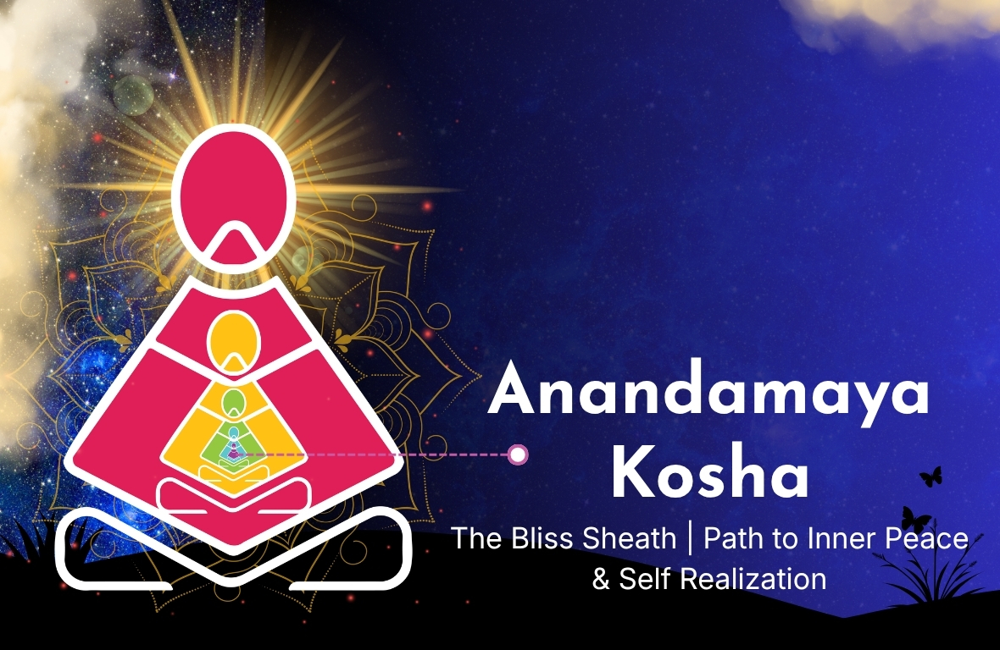

What is Anandamaya Kosha
Anandamaya Kosha is the fifth and innermost layer in the Pancha Kosha (five sheaths) model described in ancient Indian philosophy, especially in the Taittiriya Upanishad.

Word Meaning:
- Ananda = Bliss, joy, unconditional peace
- Maya = Made of or filled with
- Kosha = Sheath or layer
Anandamaya Kosha means “the layer filled with bliss.” It is the subtlest layer of human existence, closest to the true Self (Atman), yet still not the ultimate reality itself.
The Pancha Kosha Model
- Annamaya Kosha – Physical body
- Pranamaya Kosha – Energy/breath
- Manomaya Kosha – Mind/emotions
- Vijnanamaya Kosha – Intellect/wisdom
- Anandamaya Kosha– Bliss
Anandamaya Kosha is the deepest inner layer, like the core of an onion, just before the true Self.
Key Concepts and Meaning
1. The Causal Body (Karana Sharira)
Anandamaya Kosha is also called the causal body because it holds deep impressions (vasanas) that influence future actions and rebirths. It is the seed level of existence.
2. Nature of Bliss
- Not emotional happiness
- Not excitement or pleasure
- Calm, steady, unconditional peace
It is a state where there is no stress, no desires, and no disturbances.
3. The Final Veil
Even though it is blissful, this sheath is still a covering over the true Self (Atman). It is the bridge between the individual soul (Jiva) and universal consciousness (Brahman).
4. Three Levels of Joy
- Priya – Liking
- Moda – Joy
- Pramoda – Deep delight
References from the Upanishads
Taittiriya Upanishad
Describes Anandamaya Kosha symbolically:
- Head = Joy
- Sides = Delight
- Core = Bliss
- Foundation = Brahman
Mandukya Upanishad
Links this sheath to the deep sleep state (Prajna), where mind and senses are inactive, and inner peace is experienced.
Brihadaranyaka Upanishad
Explains that the Self is the source of all love and joy.
Philosophical Perspectives
Adi Shankaracharya
In Vivekachudamani, Anandamaya Kosha is described as a reflection of the Atman, not the Atman itself.
Patanjali’s Yoga Sutras
Bliss is experienced in Samadhi, a state of deep meditation and stillness.
Modern Spiritual Teachers - Vethathiri Maharishi
- Bliss is our natural state
- It is hidden by thoughts, desires, and ego
- Calm mind leads to peace → bliss → oneness
Osho
Bliss arises when thoughts stop and the mind becomes silent, leading to a state of pure being.
Symbolic Significance
Anandamaya Kosha represents inner peace beyond the mind, freedom from suffering, and unity with existence.
Modern Scientific Understanding
1. Deep Sleep State
Comparable to slow-wave sleep where body and mind are fully relaxed.
2. Brain Chemistry
- Endorphins – pain relief
- Dopamine – joy
- Oxytocin – love and bonding
3. Peak Experiences
Psychologist Abraham Maslow described peak experiences similar to blissful states.
Modern-Day Understanding
It is the state of being completely at ease, feeling whole, and experiencing peaceful happiness without needing anything.
Practices to Experience Anandamaya Kosha
- Bhakti Yoga: Devotion and surrender
- Seva: Selfless service
- Meditation: Deep stillness and silence
- Jnana Yoga: Self-inquiry and wisdom
Benefits
- Deep inner peace
- Emotional stability
- Reduced stress and anxiety
- Sense of purpose
- Mental and physical healing
Important Insight
Even Anandamaya Kosha is not the final goal because it still involves the experience of bliss. True realization is beyond this—pure consciousness (Atman).
Conclusion
Anandamaya Kosha teaches that true happiness comes from within. It is the gateway to self-realization where the mind becomes silent, the ego dissolves, and one experiences unconditional bliss.
Sittha Viruthi Yoga emphasizes the journey through the Pancha Koshas. Through practices like Narkarma Viruthi, Suya Viruthi, and Yoga Viruthi, along with meditation and residential programs, individuals move from the physical layer to the bliss state, experiencing love, peace, and joy.